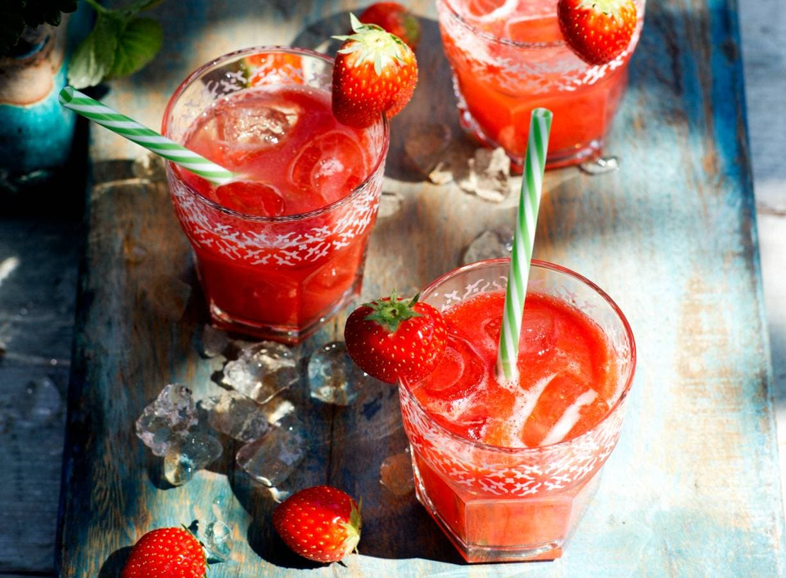

aarbeiendrankje

Waarom aardbeien altijd éten? Drinken kan ook, met wat aardbeiensiroop!
voorbereidingstijd:
wacht tijd:
totaal tijd:
- MIN
- MIN
5 MIN
ingrediënten
- 500 g aardbeien
- 6 el aardbeienlimonadesiroop
kook stappen
- Verwijder de kroontjes van de aardbeien en doe de aardbeien met de aardbeiensiroop in een blender. Pureer en verdeel over 4 glazen. Vul aan met water en serveer met een rietje en ijsblokjes.